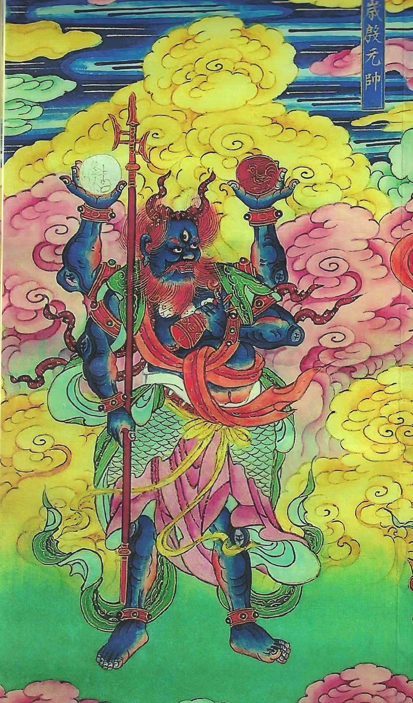
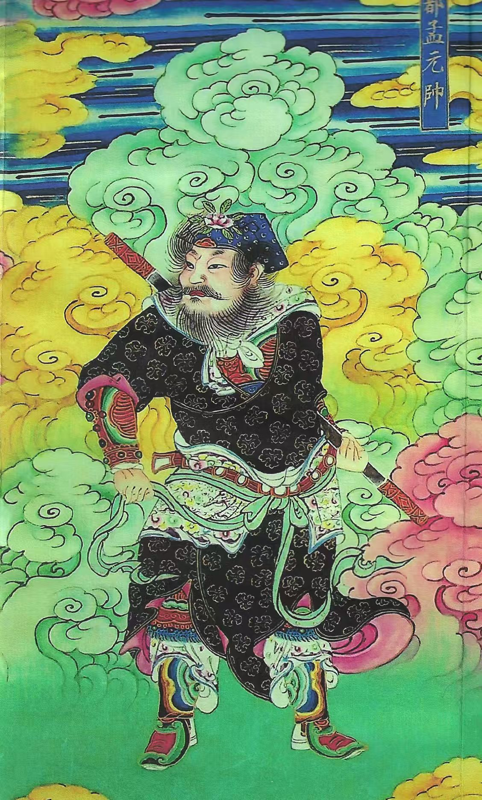
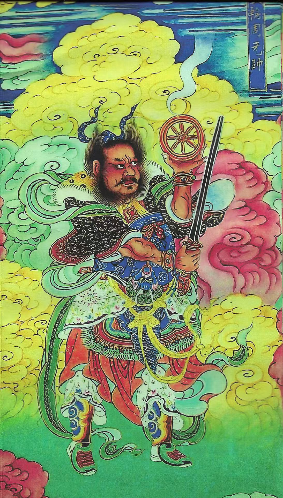

FOLK ART, SET IN MOTION — STUDY 001
A little theatre between earth and sky.Move gently. The guardians are listening.
Unrolling the clouds…
THE ART BEHIND THE MOTION
This little theatre takes its palette, curling clouds, and richly patterned figures from the reference paintings in this project. The original brushwork becomes a cast of animated paper puppets, moving in a newly imagined sky.



Three source paintings · original files preserved in reference-images
Drag the figures, tap a guardian to awaken its element, or move through the sky to stir the clouds. Adjust the wind for a quieter or livelier court. Sound is optional.
123 Awaken guardians · Space Pause · R Reset
The character names and interactions are creative interpretations, not historical identifications. Built with Canvas 2D, original image textures, and synthesized sound. No external services.